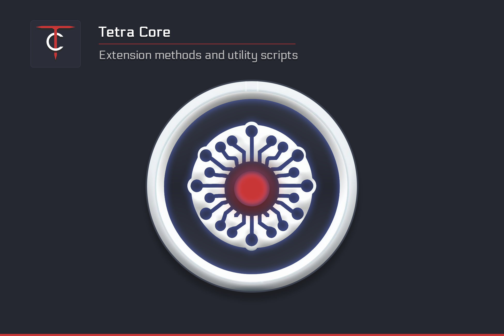

Dependency
This package has a dependency on the other asset : Tetra Attributes which is free. You need to download and import it in your project so you don't have any missing assembly reference when importing Tetra Core.
Importing the Asset
If you not familiar on how to install an asset, once you have purchased it, click on Window → Package Manager to reveal a window with all your available assets.
Type in the search field Tetra Core to download and install the last version. Follow the steps and wait till Unity finishes compiling your project.
Introduction
TetraCore is a collection of C# extension methods and utility scripts for Unity.
I've made this library to avoid writing the same block of code for each project, here is a few examples :
- Checking whether a GameObject entering a trigger collider has the expected LayerMask.
- Trying to Add an item to a list if isn't already there.
- Change the transparency of an image color.
- Show/Hide a CanvasGroup.
- Shuffle a list, get a random item from it.
- Destroy all children from a transform.
Package structure
├─ Tetra Creations
│ ├─ Tetra Core
│ │ ├─ Examples
│ │ │ ├─ Audio Manager
│ │ │ ├─ Collections
│ │ │ ├─ Float Value Condition
│ │ │ ├─ Loading Assets
│ │ │ ├─ Scenes
│ │ │ ├─ Timer Manager
│ │ │ ├─ Vector3
│ │ ├─ Scripts
│ │ │ ├─ Runtime
│ │ │ │ ├─ Enums
│ │ │ │ ├─ Extensions
│ │ │ │ ├─ Utilities
│ │ │ ├─ Editor
│ │ ├─ Third Party Assets
- Audio Manager : Using TetraAttributes and TetraCore to simplify the management of audio parameters.
- Collections : Extensions methods for ICollection and IList
- Float Value Condition : Trigger some code when a float reaches a certain value.
- Loading Assets : Using AssetDatabaseExtensions to get all assets from a folder.
- Scenes : All examples scenes
- Vector3 : Move and scale an object along a path using Vector3 extensions.
Note
I don't have an example for every extension method you'll have to explore on your own.